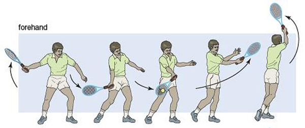
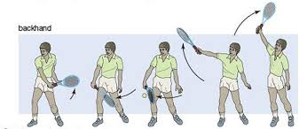
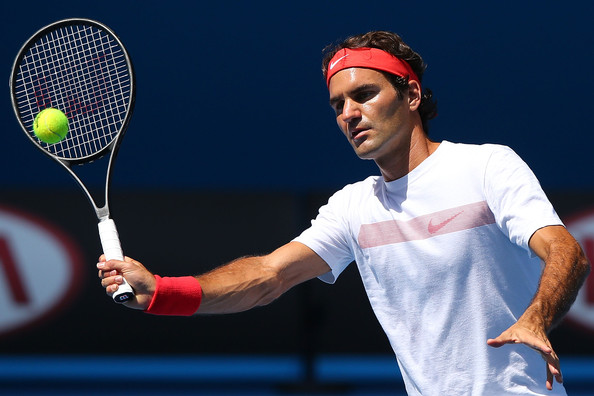
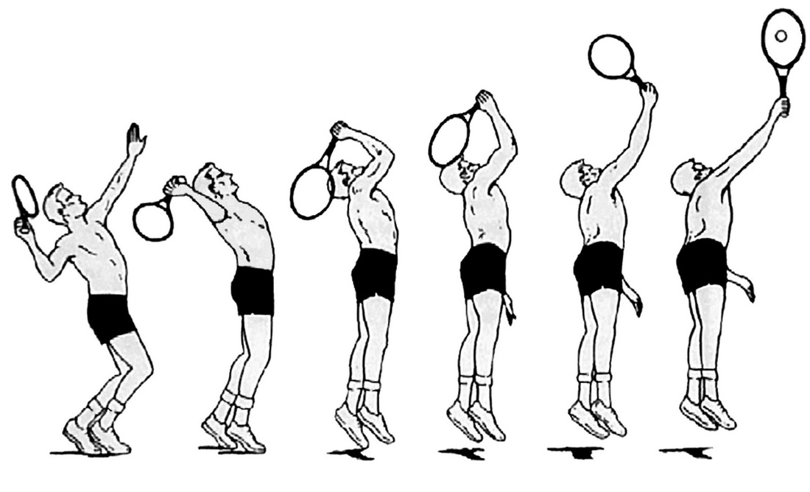
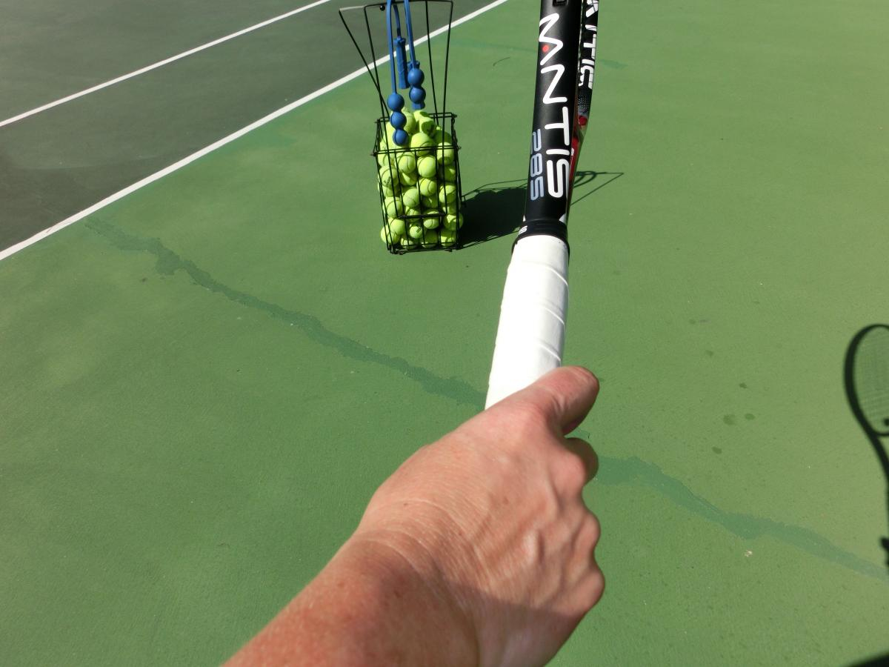

Forehand
This is the most essential stroke in tennis. As the ball approaches begin to reach back. Open your hips to your dominant side and reach back with your dominant arm with the racket at chest level. When the ball is almost even with your body, swing the racket across your body. Remember to start low and finish high. (see picture)
Backhand
This is pretty much the same as the forehand but done on the opposite side. As the ball approaches, reach across your body with your racket arm and open your hips and arm to hit the ball. The motion is the same as the forehand but your body goes from closed to open.
Volleys
Volleys are hits when you're close to the net. These require a different grip (see picture). The key to volleying is to use little wrist and to attack the ball.
Serves
For good serves you first need the proper grip (see picture). To serve, first, toss the ball straight up and bend your knees as you do so. Then bring the racket back so that it touches your shoulderblade. As the ball comes within range, lead with your elbow and snap your arm as you contact the ball. Follow through by turning your wrist and shoulder.
 Pictures